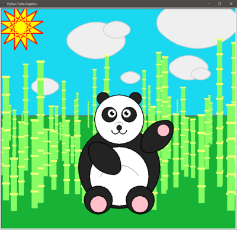
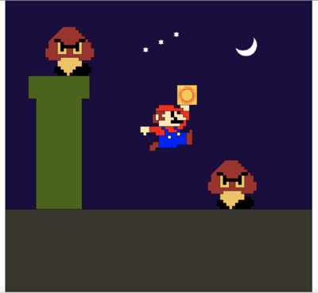
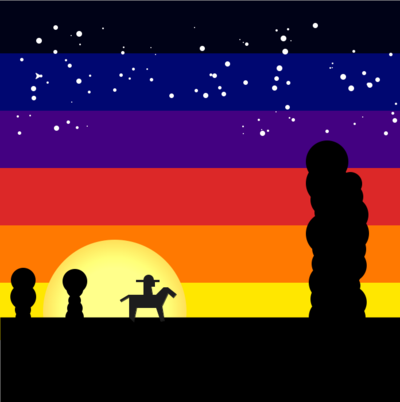
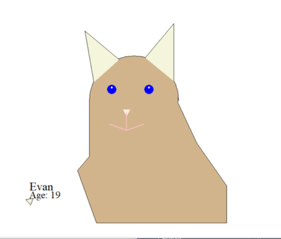
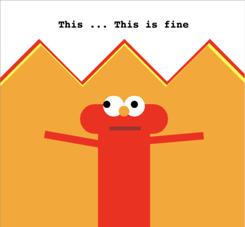
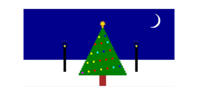

Turtle Paradise
Savannah
A serene field and mountain view drawn by artistic turtles. The clouds, flowers, and leaves are randomly placed (the turtles used their artistic intuition to choose where to put them).
Starry Night 2.0
Shivram R
Let the tranquil night bring peace.
The Time Has Come (for a Python Turtle)
emloz
Master Oogway says there are no accidents but that autograder says otherwise…
Dawn of a New Day
Elaine Dong
72 Hours Remain
Slot Machine
Adin Zimmerman
I do not endorse underage gambling. But it is fun tho
Cosmogramma Album Art
Will Fleischer
This album is good :)
Bongo Cat Ensemble
Khang Tran
Jammin’
Straight Outta COMP ONE QuaranTEN
Erin Byrd
Inspired by Kris Jordan’s Fall 2020 COMP 110 videos and Straight Outta COMP 110 stickers :)
Kilimanturtle: An Homage to Python and Bob Ross
Eden Gordon
Largely inspired by Bob Ross’s mountainscapes, Kilimanturtle portrays the great nature of the mountains using turtle graphics in python.
SEVEN_TURTLE_ARMY
Will M
Music video for ‘Seven Nation Army’ by The White Stripes but Turtle Graphics.
Jank-o-lantern
Nicole Toms
Aight so with Halloween coming up I wanted to create something dope in spirit of a great holiday + manageable python coding shapes! ✌️
Creeper Crew
Gillian Zech
Three Minecraft creepers hanging in the moonlight. The moon’s position (y-value) in the sky is randomly determined every time the image is drawn, and the sky changes to match. Can be dusk, early night, or late night.
“Belongs in the Trash”
Amanda Xiao
I got inspired by Squidward’s “Bold and Brash” painting, so I decided to recreate it and add some happy little stars in the background. :)
Black Panther
Elvin Liu
The power of the black panther charged up.
Panda
Akshay Walavalkar
It’s a panda in the middle of bamboo.
Happy Little Sun
Bailey DeSouza
I wanted to create a piece that is very colorful and happy to uplift myself and others during this midterm season.
A Peaceful Hammock Scene at Sunset
This scene pictures a hammock between two trees as the sun sets and stars fill the sky.
Sunset Beach
Grace
“A peaceful beach view under a setting sun.”
The Long Road
Cher Xiong
Breathe in the freshness of solitude, Mother Nature, and an endless journey full of fun-filled adventures and cherry blossoms! Look ahead into the brightness of your future but do not forget to take in the scenery as you travel along!
Exit Planet Dust
Miki Seibert
Named after one of two albums that I listened to on repeat while I programmed this. The Chemical Brothers’ music always makes me wish I were driving down a desert highway…
Drive Through the Mountains at Sunset
Joyce Liu
This piece contrasts the complexity and beauty of the natural world with a minimalist depiction.
Mountain scenery.
A scenery of a mountain range.
v A p O r W a V e
Anthony Kayode
The past that never was…
“The Mountains”
Vrinda Desai
A piece inspired by the Blue-Ridge Mountains with their iconic blue-looking silhouettes.
Master Sword

It’s dangerous to go alone! Take this.
A random starry night
Joshua
Everything beyond the green foreground is randomly placed or produced.
Relaxing Beach
Victor
The randomness of the coral is symbolic of the creative aspect of nature.
Gentle Countryside
Brendan O’Malley
Relax and enjoy life’s natural beauty.
Shadow Clone Jutsu
Edward Baker
Naruto’s Shadow Clone Jutsu
The Progression of a Suburban Town
Mona Murarisetty
This project models a town going from just nature to buildings, homes, and apartments. In short, a progression.
Stars and Turtles
Aaron Tackett
This piece represents the beauty of randomness in nature as well as the olden days.
PacMan
Hopefully I secured the bag on this one guys
We’re Open!
sapphire
a glimpse into the retro diner aesthetic
Mountain Reflection

Katherine Bacon
These are mountains reflected in a lake of some sort.
From Dusk till’ Dawn
Christina LT
From Dusk till’ Dawn we party all night long!
Mamba Forever
A Tribute to Kobe Bryant, the Black Mamba
Happy Birthday!
Here’s a birthday scene to brighten up your day!
A Special Spotting
Manisha Nallakatla
A single medium masterpiece.
Mountain Sunset
Benjamin Hites
The view from my window in Maggie Valley, NC
富士山 ~ Fuji-san ~ Mt. Fuji
ERS!
My Python Turtle scene paints the view from my window: Mt. Fuji, a beautiful sunset, the ocean, and the sun. Thankfully, I’ve never seen Mt. Fuji erupt before, but it is an active volcano and 2020 so I guess who knows…although I hope not!
Dazed City Night
PanDora
The scene represents the luminescent moon and twinkling stars rising above the city in contrast to the city’s unusual lack of flashing lights. Note: My second submission in grade scope is the version of the program I finished that did not include any buildings (I ran out of time before the submission and finished up during the grace period). Below is my official gallery project!*
Parasailing in Mexico
This piece is inspired by a family trip and a stock photo of the beautiful beach in Cancun. We see a view of the brightly colored aqua waves rushing onto the beach and the tops of the umbrellas on the beach. In the background, we can see the hotels that make up “Zona Hotelera.” The main attraction is the person flying in a parasail above the ocean, whose perfect parasail contrasts amazingly with the blue water.
MarioTurtle
Richard Gabrielli
Create a Mario inspired Turtle scene
Arizona Ranger
Josh Spiess
“To the town of Agua Fria rode a stranger one fine day…”
La parodie mal faite de la colline derrière la fenêtre
Bill Gates may have jumped a chair but I jumped over pages of documentation to make this.
In the Holiday Spirits
Meghan Sun
A glimpse into a winter wonderland to remind us of the most wonderful time of the year. The holiday spirit is here to help us forget about all of our troubles and to be the source of hope and happiness in our lives.
Instantaneous Change
There is not enough time in the day for everything good in life.
Trippy Turtle
Samuel Tsolis
Much like the tunnel-vision you experience while coding for hours on end, this scene will mimic that same trippy illusion. Never fear, the simple row of rainbow stars is sure to bring your eyes back to earth!
Day or Night
A railroad intersecting day and night.
A Cozy Night in the Forest
Simple but pleasant
The Peaks of Day and Night
Vidya Ramesh
Shows the two halves of the sky colliding.
The Cpuniverse
Isaiah Standridge
In space, no one can change the directory. This piece shows a computer in the deep stretches of space booting up to display the class that taught me everything I know about the process used to create said piece. Paradoxical.
autokandinsky
Jackson Meade
Some call him an artist, other call him a hack. Hack? Ridiculous. No computer systems were harmed in the production of his code.
Wild Wild West
Yosemite Sam
My piece illustrates the seemingly remote and barren lands of the wild west. Though it lacks in trees, its abundance in cacti makes up for it. A large mountain range is also featured with tumbleweed and rocks, and a long, empty road driving off into the sunset–or sunrise.
The House
A house in a forest.
Turtles on a Beach
This scene captures turtles relaxing on a beach.
Portrait of Our Solar System
Earth is big, but space is bigger.
A Happy Universe
Rodrigo Meza
Even though we are surrounded by the unknown, we should not stress over it, but be happy with what we do.
The Tentacles Residence
Krish Rapaka
10/10 would learn clarinet in this house
Serpinski’s Triangle
lil monke
This is a fractal.
Outside A City Under The Stars
Albert “Christian” DeMarco
Gusts of wind blow above the city, and stars twinkle in the sky. “Outside A City Under The Stars” is prodigy turtle-artist Albert “Christian” DeMarco’s first masterpiece of many to come. 1000 lines of questionably efficient code that took two hours to fix for linting, it is not near as impressive as it ought to be. Yet, something about it takes the breath away, and makes somebody, somewhere, think “Yeah, that is reasonably dank picture.”
Star Tree(k)
Christine Mendoza
This scene was inspired by a tree I saw when visiting my aunts, uncles, and cousins in the Philippines. It incorporates elements of organized randomness as a shadow of both the diversity in and the intricate structure of Creation. (Unfortunately, this scene was actually not inspired by Star Trek… but if you look closely, you might see the Vulcan Salute in the branches of the tree!)
Carl The Corgi
Humanity
Corgis are simple, corgis are fun. But most importantly this corgi kind of looks like a cat. With the ability to allow anyone to attribute their ownership over this masterpiece, Carl the Corgi stands in the face of copyright law and allows everyone to shower in the beauty of art for art stake. Anyone can cook and now anyone can say that they made this wonderful corgi painting. Also Corgis are just neat.
Old Well and Argyle
Aadil Mehasanewala
I wanted to bring the UNC vibes to comp 110!
Sun Meets World
Scott H
Breathtaking image depicts the sun rising over vintage Chapel Hill
Snowy night on a city
Describes the beauty of a snowy night in a city.
Salty Shores
David Karash
If life’s a beach, then 2020 is a **********************************.
""“Mountain Sunset”""
Robin
I’d like to thank the wonderful instructors at this institute. I couldn’t have done it without you!! This piece was inspired by “grandma’s fridge aesthetic.”
Cacti Desert
Just a serene desert with clouds. Relax
Beach Sunset
n/a
Serenity
Status of Chapel Hill during COVID-19.
Sunset
Luke Robert
Sunset
Ramiel Enters Tokyo-III
Danielle Shoemaker
I went into the project wanting to recreate a scene from my favorite TV show, Neon Genesis Evangelion. I settled on an image based on the third main enemy of the show, the octahedron shaped angel Ramiel, which attempts to drill into the ground of the city in order to attack the protagonists.
The Kitchen
Grace Taylor
This is an image of my kitchen which allows me to create a lot of cool things just like in computer science.
A Peaceful Beach
A simple background of the beach with randomized fish and seashells. That is, the fish jump out of the water and seashells show up on the beach at random locations.
Egyptian Sunset
N.H.
I depicted the sun dipping from Egypt
Tree
Tree.
Space Oddity
Logan
A simple solar system
A Rabbit’s Wish
Sophia L
A family of white rabbits look up at the night sky from a meadow of flowers, where they see a gigantic shooting star.
No-Face
Adam H
I may have spent days on this but it will never compare to amount time I spent rewatching Spirited Away as a kid : )
Kissing a star
Dingyuan Liu
Never forget to seek for light when in dark
Wilderness Sunset
Seth Rogers
Captures the symmetrical and asymmetrical beauty of nature in one image.
Calm Lake
Yutian
Calm lake is like a mirror reflecting all those things
Rocky Turtle High
Katherine Bacon
These are mountains reflecting into a nice lake.
Our Universe
Michael Fehl
Although Earth may be seen as lonely with the only planet known to have life existing on it, when we alter our perspective a bit we realize we had neighbors all around us, possibly teeming with life, putting our own existence into perspective.
The Swarm
Kyle Friedman
If you look closely, the formation of the bees can often create patterns or codes. Is it just our interpretation of random noise, or does the randint() function have some higher goal beyond our comprehension?
Peace and Randomness of Nature

KM
A delicate artwork that uses randomization to develop a beautiful minimalist landscape art. This “piece” of art is a work that is developed using the python Turtle class, in addition to the random class, to bring you the joys of “peace” and “randomness” of mother nature. This artwork is dedicated to the UNC COMP110 class.
Human Pyramid
A.H. Roy
We are a collective assembly; by supporting each other, we flourish.
Safe Haven
Savas
Let go of any negative emotions and transcend the mind.
Christmas Eve
Wonjae(James) Oh
A Beautiful Day of Christmas Eve in Nuuk, Greenland.
City of Stars
Lacey Ragan
Portrait of a city at night. Title inspired by the movie La La Land. Turtle named after Nick Miller from New Girl.
City
Have a great day!
Mountain landscape
Nina Geodakyan
Personal rendition of a peaceful, snowy mountain landscape.
California’s Latest Gender Reveal Fiasco: A Not so Happy, Little Accident
Srikar Pasumarthy
This is a kindergarten level drawing of the orange skies in the West Coast that look almost like dystopian movie was adapted to reality.
Remembering the Crayons We Broke and Pencils We Squiggled With
Aayush Mehra
I made this piece reminiscing the Crayola crayons and pink eraser-tipped pencils I used to use as an elementary school kid.
Earth At Night
Andrew Croitoru
An interactive nighttime scene featuring mountains, the moon, stars, nebulae in the background, and trees, a river, and a pinwheel in the foreground.
Skyscrapers
Larry Gao
A cartoon style image of five of my favorite skyscrapers
Dragon Ball in the Forest
Caleb Gill
An adventure waiting to happen.
Christmas in Visual Studio
Common Sense
The Grinch is gonna love Christmas in 2020
Janae Goodison
Janae G.
My beautiful Turtle Statement!
Solitude
Mike Garcia
COMP SCI Casa Blanca
10 p.m.
MattyB
There’s nothing better than a peaceful nighttime sky.
Sailing at Sunset
Sara Mei
A peaceful moment at sunset. The waters are calm, the sun leisurely sets on the horizon, a few birds provide you amicable company, and the fluffy clouds promise fair weather for the foreseeable future as you sail onward.
Childhood Art
One of my childhood piece, remastered
Happi Dayz
Julia Brazer
The sun is a reminder of home, which is Florida. I am most at ease and peace when I am at the beach or in the sun, so I decided it would be fun to create something that makes me feel warm.
Kris’ Response To Cheating
Peter Tung
This masterpiece is inspired to me by the COMP GOD (Kris) himself
Snowman!!
@ibra_shak 15 HOURS OF HARD WORK. What do you guys think? ##fyp ##foryoupage ##arab ##middleeast ##middleeastern
♬ original sound - ibra_shak